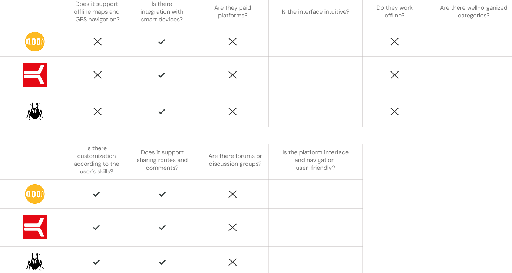
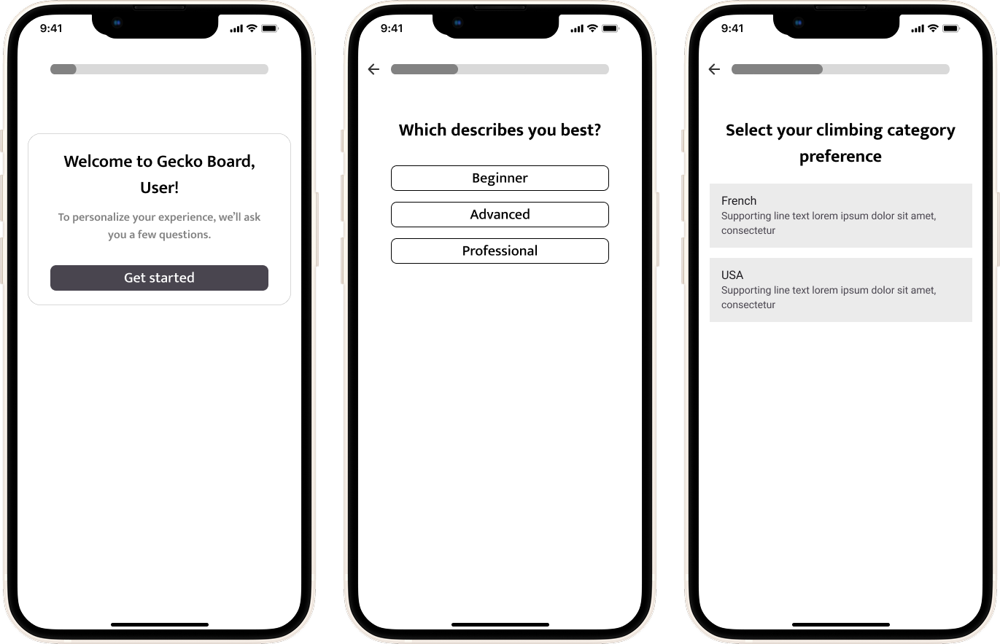
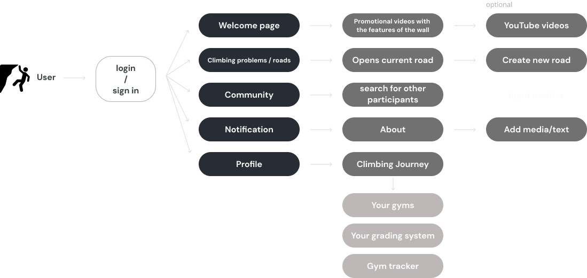
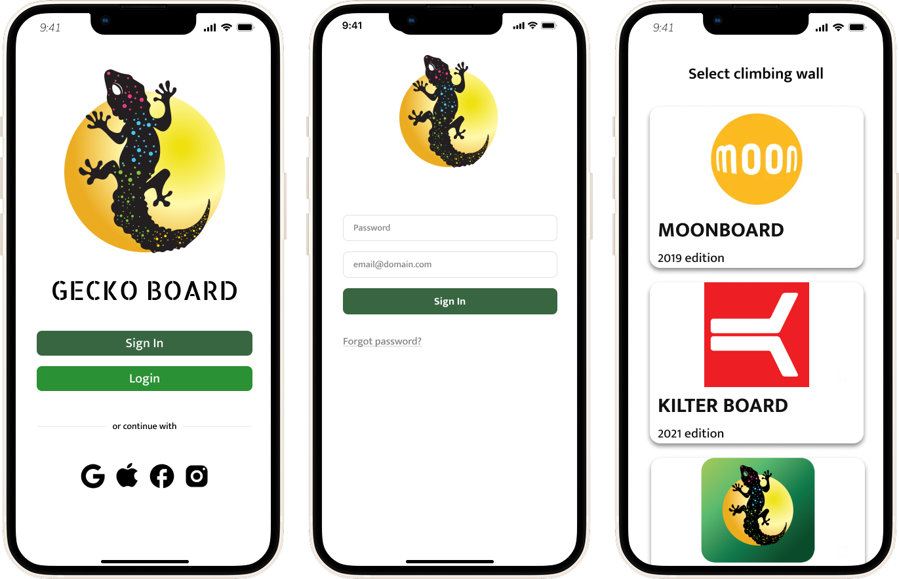
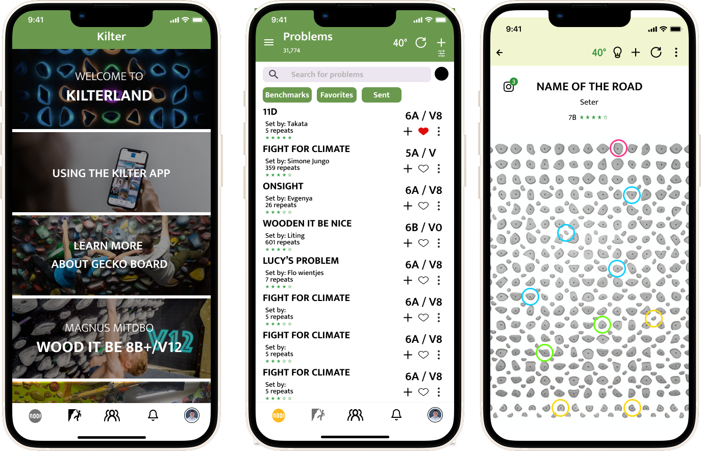
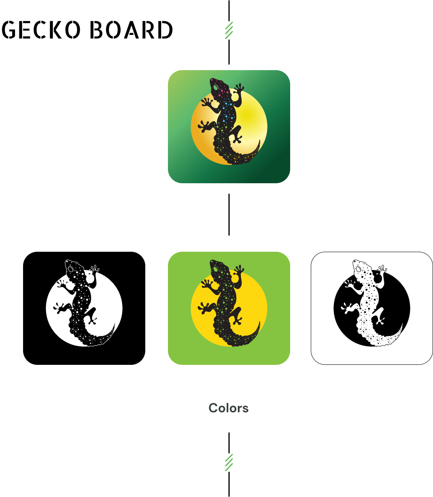

Project summary
Gecko Board is a mobile application designed to facilitate climbers in planning and executing their training sessions. The project aims to create an intuitive and functional tool that offers effective training programs and personalised routes. The application features a modern aesthetic, easy navigation, and a high degree of usability.
My role
Research, competitive audit, user flows, prototyping, visual design, branding
The problem
Climbers often struggle with planning and executing training sessions due to cumbersome and time-consuming traditional methods. They need a personalised and intuitive platform for tracking progress and selecting routes. Existing tools often lack user-friendliness, leading to frustration and inefficiency. This project aims to solve these issues by creating a mobile application that combines functionality, ease of use, and modern design to improve the training experience for climbers.
Process
Research > Define > Iterate > Prototype > Test
The solution
Gecko Board addresses these challenges by offering a mobile application specifically designed for climbers. Key features include:
- Intuitive Interface:
- Easy navigation and user-friendly design ensure climbers can quickly access and manage their training sessions.
- Modern Aesthetics:
- Attractive visual design with a green color palette (#2A9134, #3FA34D, #5BBA6F) and the "Mukta Mahee" font for readability.
- Interactive Guides and Tips:
- Assistance for new users and guidance on utilizing the app’s features effectively.
- Real-time Feedback and Tracking:
- Monitor progress, set goals, and adjust training plans based on performance metrics.
The app combines these elements to create a comprehensive, user-centric tool that enhances the training experience for climbers, making it more efficient, enjoyable, and effective.
Next - user interviews. I went to climbing gyms and talk with anyone interested in the development of climbing. Some of the important questions were:
“Have you ever used the "Moonboard" or "Kilter board" app? How often?”
”What are your needs for future products?”
”Would you use an application to connect with people and track their progress?
The idea of the interviews was to understand is there a need of user-centered and effectively addressed the needs of climbers. Based on the answers of some questions, the users may be split into two important groups:
Climbing experts 🤓
or those who frequently use climbing wall apps
😵 Climbing newbs
or those who are not aware of the systems and usages and depend on their luck or the information they get from media/friends
of course, there are people in the middle...
Afterwards, I made an competitive audit of any climbing wall apps I’ve found on the app store and google play. There are quite a few apps, but all but Moonboard are supported by Aurora climbing and have pretty much the same UI and UX issues.

Based on the research and the user interviews, I talked with more climbing experts. I also showcased a prototype (made in Figma) of an idea how I envision the reporting flow in my head - some of the screens shared below:

With those visuals, I came up with the following user flows:
User flow: A user using the application for the first time

Based on the user flows, I’ve created a new prototype covering the base functionality. It is currently under user testing - the goal is to improve the usability of the flows and to better the step process for the UX.


Bonus: Branding

Primary
Secondary
Tertiary
Neutrals
Error / Success